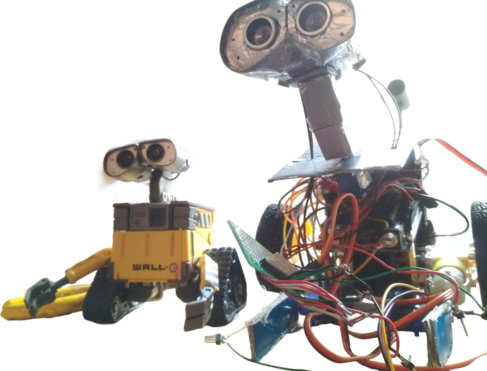
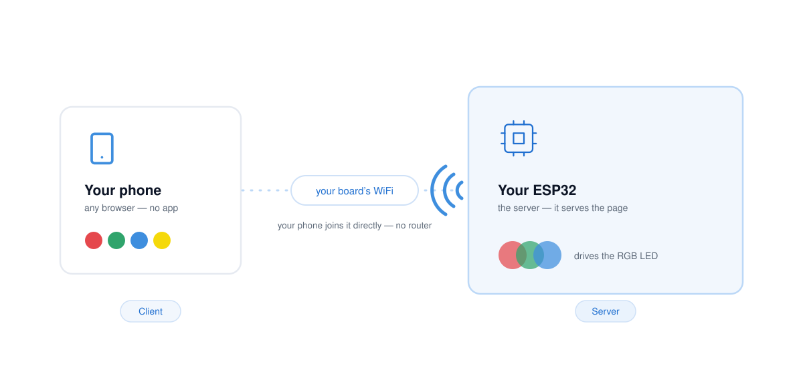
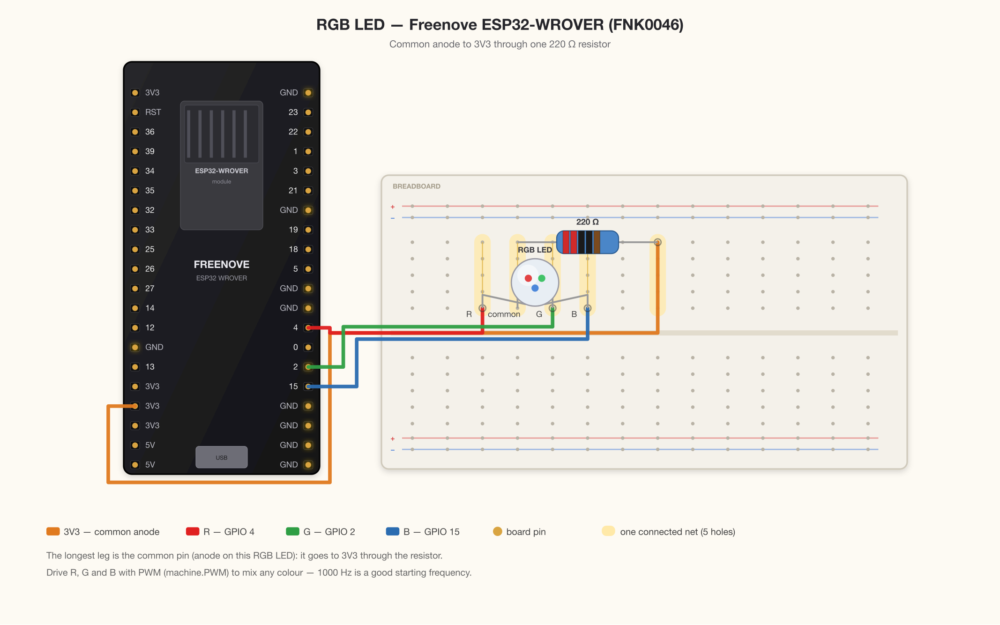
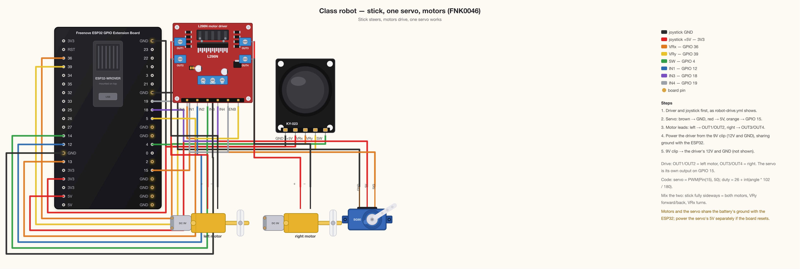
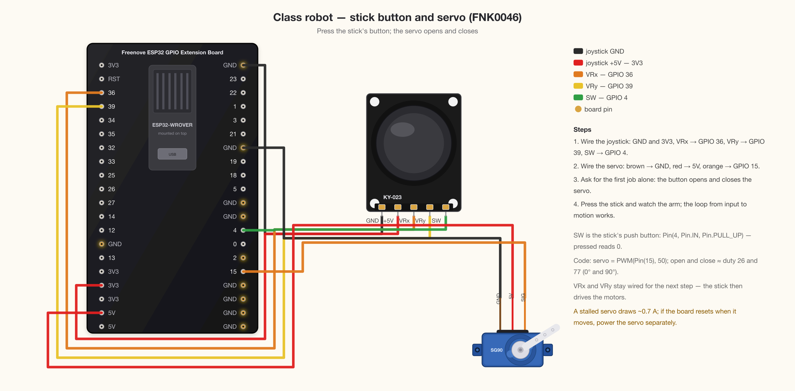
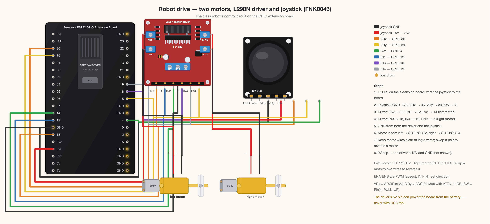
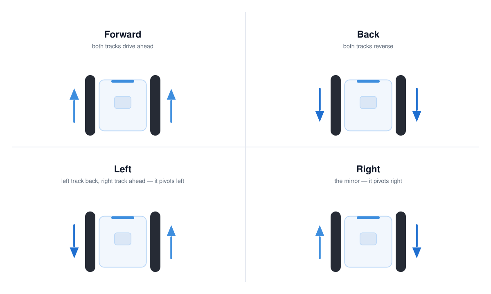
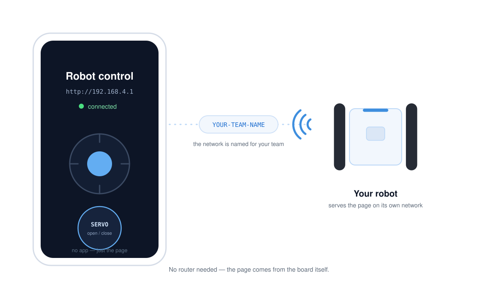
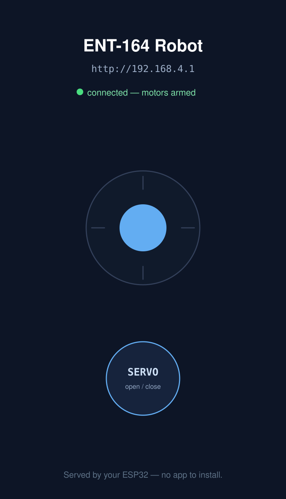

Hand Making and Robot Challenge Kickoff
Sketch concept variations; build a foam core mockup.

Class 6 · Week 6 · Fall 2026
Your ESP32 can serve a web page your phone opens. No app required. Today we get your robot on WiFi, build it up step by step, and drive it from your phone’s browser.

Robo Challenge · roadmap
Today is Week 6. Going Wireless. Here's how the robot build comes together.
Sketch concept variations; build a foam core mockup.
Create a laser-ready 2D design; cut structural parts.
Model 3D parts; 3D print functional parts.
Wire motors, sensors, and controls; program with MicroPython + AI.
Light an RGB LED from your phone; drive the robot over its own WiFi.
Final integration and test runs.
Race on the course, then close out the first module.
Week 6 · Going Wireless. Light an RGB LED from your phone, wire up the robot, and drive it over its own WiFi hotspot.
Recap
You should have all three from last class. Tell us now if something is missing.
You've received your electronics kit. The parts you'll wire up today.
opencode is set up and MicroPython is deployed to your ESP32. It runs your code on the board.
You can already build basic electronics projects with the help of AI.
What you'll learn today
Connect, then build. The two things we do in class today.
Reach your device from a phone and from a web browser. No native app needed.
Put it all together: a control page on your phone that drives the robot you built.
Two ways to connect · 1 of 2
The board becomes the network: your phone joins it, and nothing else is needed.
The ESP32 creates its own WiFi hotspot. Your phone joins it like any network — no router involved.
The board serves the page at its own address — like 192.168.4.1. Type it in and the controls are there.
While your phone is on the board’s network it is off the internet — normal, and fine for class.
Two ways to connect · 2 of 2
The board joins a network you already have, and you reach it over that network.
The board joins a WiFi — home, or a shared one — and gets an address on it, like any computer.
Any device on that network can open the board’s page — and your phone keeps its internet while you control it.
On a shared network the board can reach online services — and it obeys the network’s rules, like its password.
WiFi connectivity
Your phone asks for the page; the board serves it — over the board’s own WiFi. No router, no cloud.

Client — your phone asks · Server — the board answers · No cloud — the board is the whole network.
In-class exercise
Before the robot, prove the whole loop on one LED: wire it, ask for a page, open it on your phone.
The prompt
“I’ve connected an ESP32. I want to use MicroPython to control an RGB LED from my phone over a wireless hotspot.”
Join the board’s WiFi, open the address it prints, and pick a color.


The build
The L298N sits between your ESP32 and the motors — the same wiring your robot already has.

Wheels off the ground while you test. The motors spin the moment the code runs.
Build it up · step 1 of 4
The smallest piece of the robot: press, and the arm moves. Prove the loop before adding motors.
The prompt
“I want to use my joystick’s push button to open and close the servo.”
One small ask, one test. This is the loop for every step after it.

Build it up · step 2 of 4
Now the drive train: forward and back, and pivoting turns with differential steering.
The prompt
“Now drive the robot from the joystick: up and down go forward and back, left and right pivot it with differential steering. Stop when the stick is centered. I have a L298N driver to control the motors.”
This is the drive half of the robot — everything from step 1 stays wired.

Build it up · step 3 of 4
Wheels off the ground first, then every direction on the floor.
The prompt
“Add a self-test that drives forward, then backwards, then turns left and right — about a second each — and prints each step, so I can watch and check.”
Something off? Say exactly what you saw — “the left wheel spins backwards when I push up” — then re-test. One fix at a time.

Build it up · step 4 of 4
The hotspot is your team’s name — your phone talks straight to the board.
The prompt
“Finally, make the robot its own network: create a WiFi hotspot on the device named [fill in your team name], and serve the joystick and button UI over it. When my phone joins the robot’s WiFi, the control page opens and drives the robot — no other network needed.”
Replace the highlighted placeholder with your team’s name — it becomes the WiFi network everyone joins.

On your phone
The page has two controls: the stick drives, the button works the servo.

What each control does
Drag the stick → the motors follow your thumb
Let go → everything stops
Press the button → the servo opens or closes
Every drag and press is a request the board answers itself. The whole app is one page — nothing to install.
Under the hood
Every tap on your phone becomes a request the ESP32 answers.
Your ESP32 runs a web server that renders a web page. No separate computer needed.
The board serves the page from the network it creates — the address the code prints, like http://192.168.4.1.
Your phone's browser renders the HTML that the ESP32's web server generates.
Interacting with the page sends a request to the ESP32 (its address is http://192.168.4.1). It reads the request, sets the pins, and answers with the next page state.
Your turn
Once your device is online, the browser becomes a remote control for anything you build.
A dashboard with temperature history charts.
Swap the buttons for a virtual joystick: drag to steer, release to stop.
Save them to the device: set a thermostat temperature, or set an alarm clock.
See the status of an LED (on/off) or the current servo angle.
Before you go
Then get your device online. Next week: Final Robot Assembly and Testing. Integrate everything you've learned into a working robot.
Individual assignment: electronics project. Present a working circuit.
Where to find us
Office hours
go.tufts.edu/meet_tvdv
Email
thomas.van_de_velde@tufts.edu
Course materials
tuftsmaker.github.io/ENT-164